Kintamani and Bedugul
Highland fruit and vegetables
Verified organic supply for fruits and vegetables from Bali's cool-climate highland agriculture.
Verified Organic
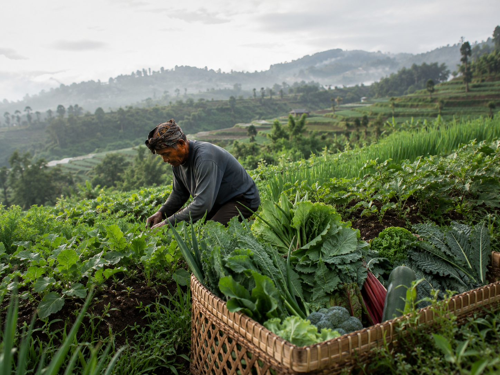
Source map
We keep the sourcing story clear: what comes from the highlands, what comes from organic farms, and which Balinese ingredients are selected by region.
Use this page as the sourcing reference for the e-shop product cards.
Source gallery
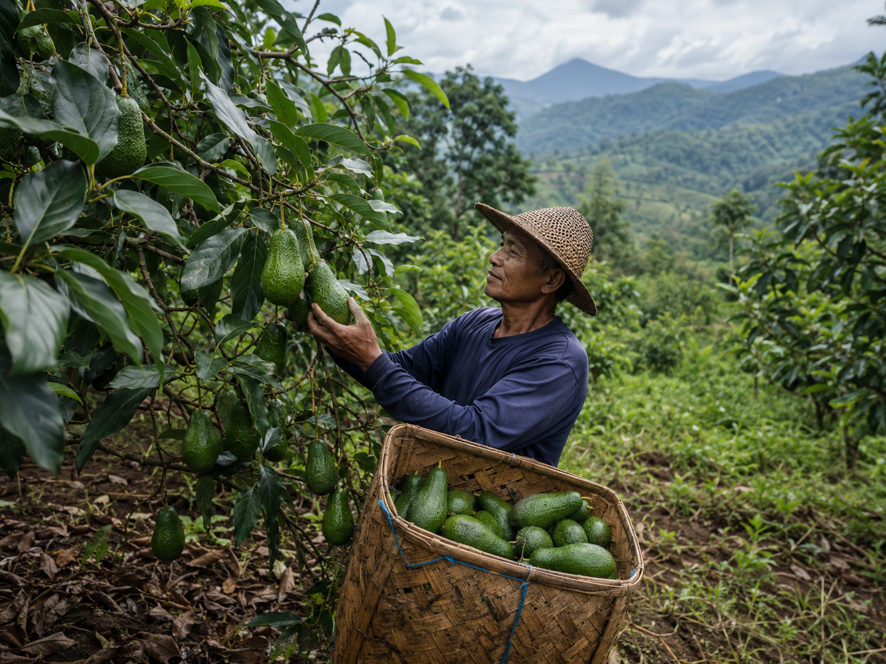
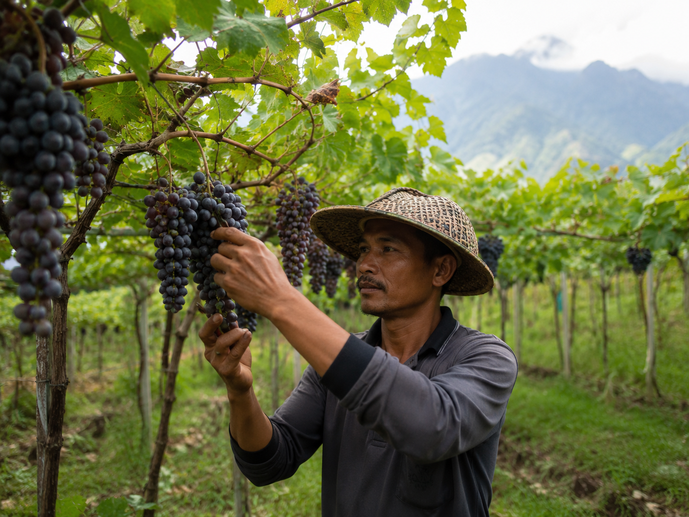
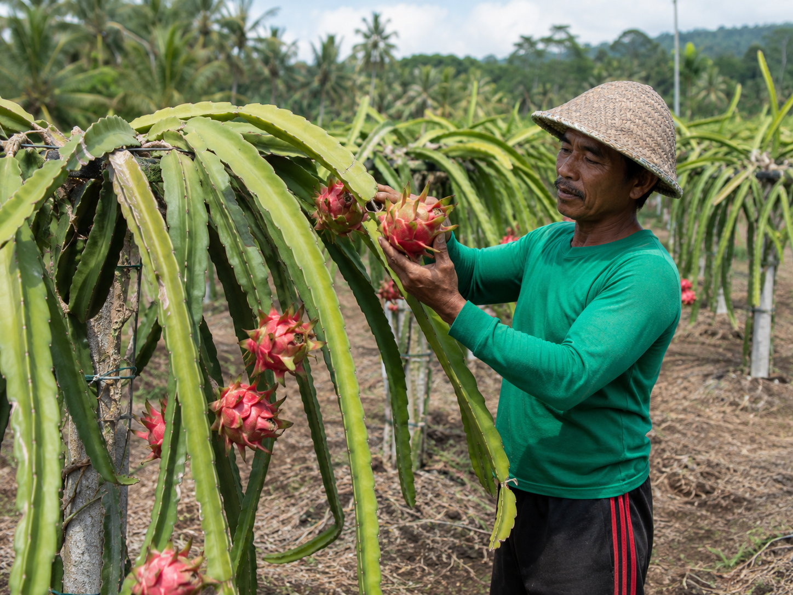
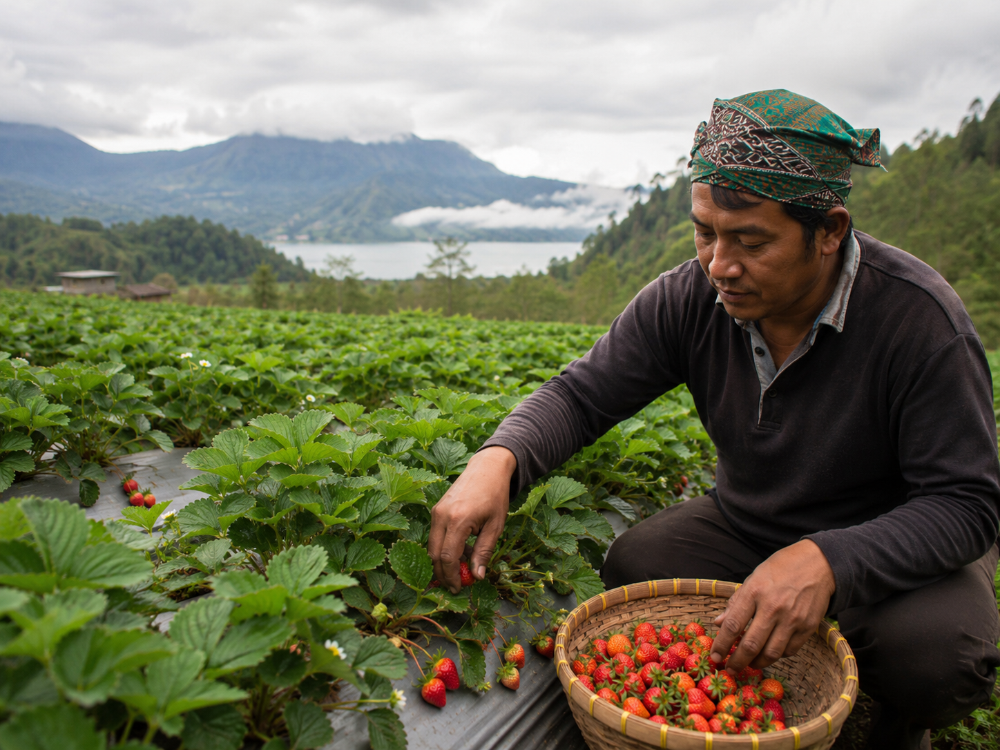
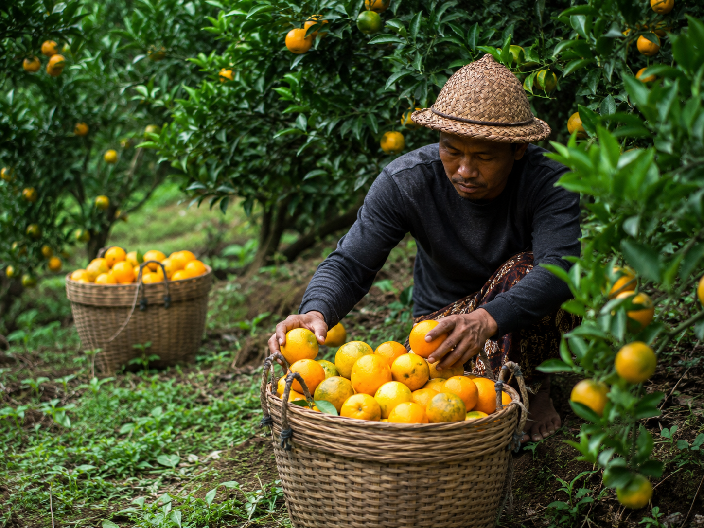
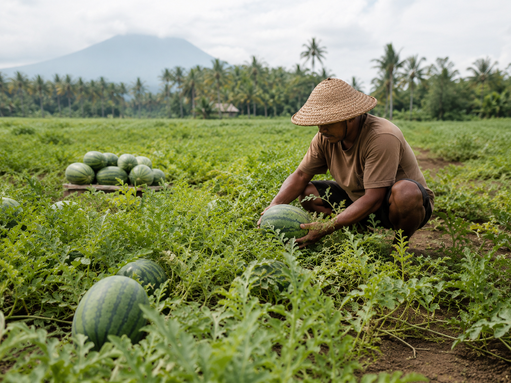
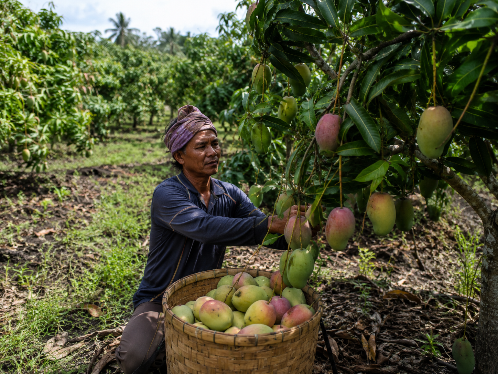
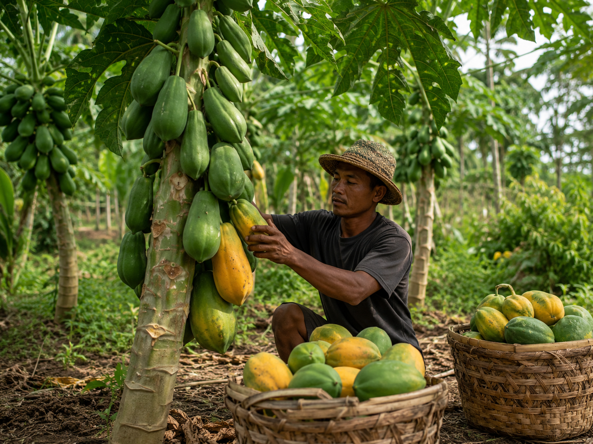
Verified organic supply for fruits and vegetables from Bali's cool-climate highland agriculture.
Verified Organic

A focused sourcing area for organic herbs and spices, plus ingredients that carry the Balinese kitchen identity.
Organic herbs & spices
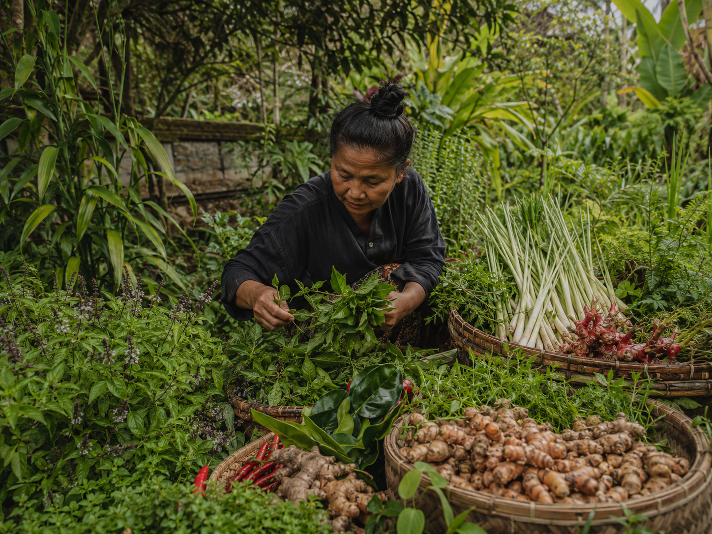
A clean highland pocket for organic vegetables, chosen for steady quality and everyday kitchen use.
Organic vegetables
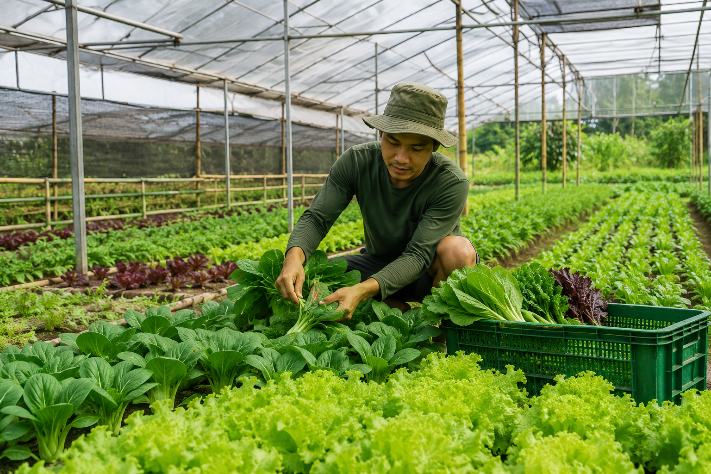
An important fruit-growing area supplying organic fruit cultivation with seasonal Bali harvests.
Organic fruit supply
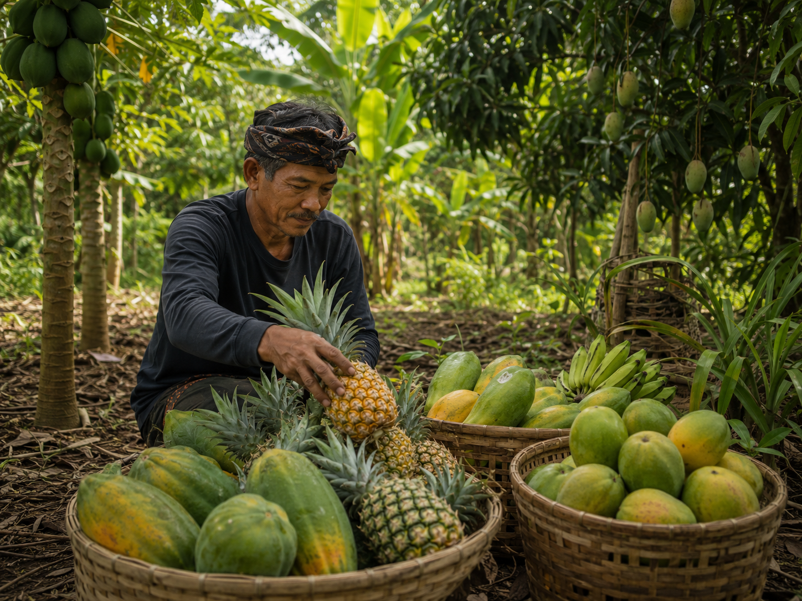